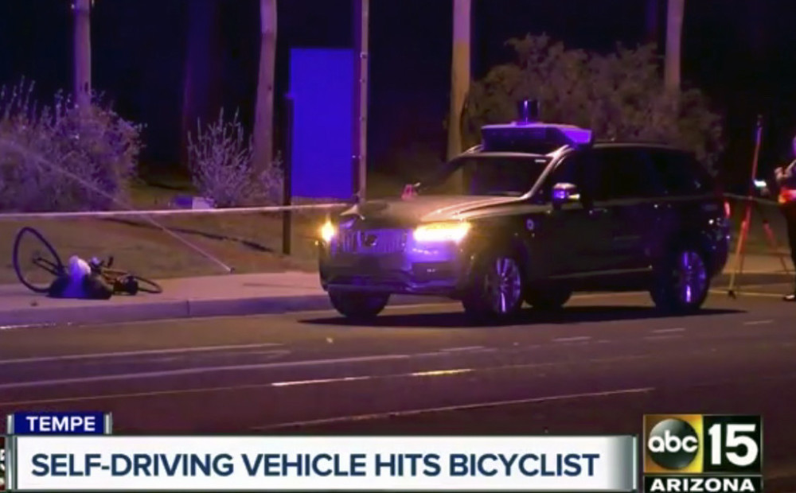

1.Найдовша автомобільна пробка в історії була зафіксована в 1980 році на французькій автостраді, між Парижем і Леоном. Її протяжність становила близько 200 кілометрів. Друге місце займає пробка, зафіксована неподалік Гамбурга в 1993 році, її протяжність - 180 кілометрів
2.У Фінляндії немає строго фіксованих штрафів для автомобілістів: скільки заплатиш за порушення, залежить від твого доходу. Якщо винуватцем ДТП став мільйонер, він може розщедритися на десятки і навітьсотні тисяч євро.
3.Знак «початківець-водій» введений в ужиток в багатьох державах, у тому числі і в Японії. Але у японців є своє ноу-хау: водії, яким більше ніж 75, теж зобов’язані повідомляти про це особливим стікером на склі. Раніше значок виглядав, як опалий осінній листок. Але багато японських пенсіонерів сприйняли таку аналогію образливою і відмовилися купувати стікери. З 2011 року знак був змінений на чотирилистник, і тепер він влаштовує всіх.
4.Всі знають, що сідати за кермо п’яним незаконно. І більшість держав строго карають водіїв, що сіли за кермо напідпитку. Крім Уругваю: там управління авто у нетверезому стані вважається не обтяжуючою, а пом’якшувальною обставиною при розглядах по ДТП.
5.20 березня самокерований автомобіль збив жінку, яка йшла по проїжджій частині за межами пішохідного переходу.Хоча камера машини вказує на неминучість зіткнення, роботи вже почали вбивати людей
